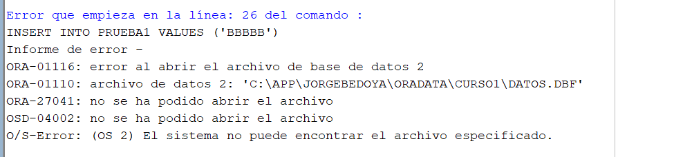
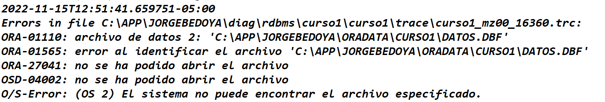
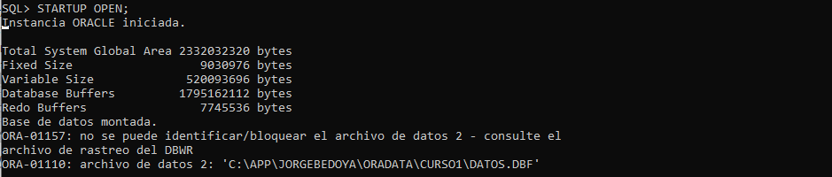
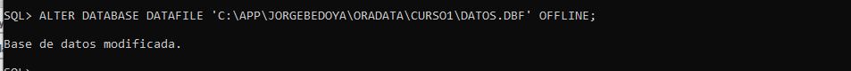
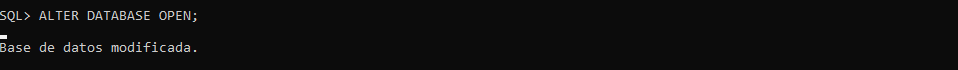
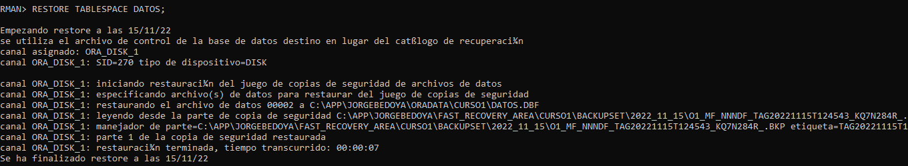
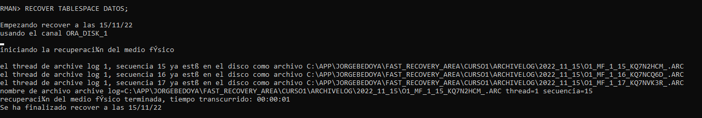
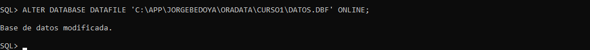
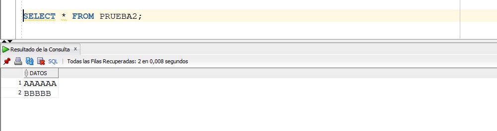

Si el tablespace que vamos a restaurar es alguno de los del sistema, SYSTEM, SYSAUX, UNDO, etc., debo hacer la restauración en frío, y en modo STARTUP NOMOUNT. Si es un tablespace de datos, lo puedo hacer en caliente.
Para hacer el ejercicio, miremos los tablespaces existentes.

Podemos observar que hay un tablespace llamado DATOS.
Primero hagamos un backup del tablespace con el cual vamos a hacer el ejercicio, DATOS.
Ahora, conectémonos con el usuario de trabajo a SQL Plus y hagamos algo en el tablespace.

Lo anterior no quedó en el backup que hicimos del tablespace.
Vamos a simular un daño en el tablespace, borrando su correspondiente Data File. Vamos a Windows y lo borramos. En este caso, borramos DATOS.DBF.

Tarde que temprano, vamos a obtener un error, generalmente es el error de end of channel. Miremos el archivo de trace y detectamos que el problema es con el archivo que hemos borrado.


Luego de hacer un SHUTDOWN ABORT, tratemos de abrir la base de datos con el comando siguiente. Obviamente, se genera un error.

Para solucionar el problema, y recuperar el tablespace, la idea es tratar de poner el tablespace en estado offline. Pero eso solo lo puedo hacer cuando la base de datos está abierta. Como accedo a poder abrir la BD exitosamente? Hago lo siguiente:

Al poner el archivo de datos en modo OFFLINE, nos dejará abrir la base de datos.

Y es acá donde ponemos el tablespace en modo OFFLINE:

En este caso, como el único Data File del tablespace DATOS ya lo pusimos OFFLINE, automáticamente el tablepsace queda OFFLINE. Por eso saca el error de que el tablespace está ya OFFLINE. Pero normalmente un tablespace puede tener otros Data Files, y en este caso sí habria que ejecutar el OFFLINE del tablespace.
El tablespace que se va a recuperar se pone OFFLINE con el fin de que mientras hagamos el restore del tablespace, la base de datos esté disponible para otros usuarios.
A continuación, comencemos con la recuperación del tablespace. Primero el RESTORE del tablespace.

Luego, el RECOVER del tablespace. Se puede observar que utiliza unos ARCHIVELOGs para hacer el RECOVER.

Luego de haber recuperado el tablespace, debemos poner el Data File correspondiente en modo ONLINE.

Luego hagamos un SELECT a la tabla que habiamos creado en el tablespace, y ahi van a estar todos los datos. Se recuperó todo.

Video: